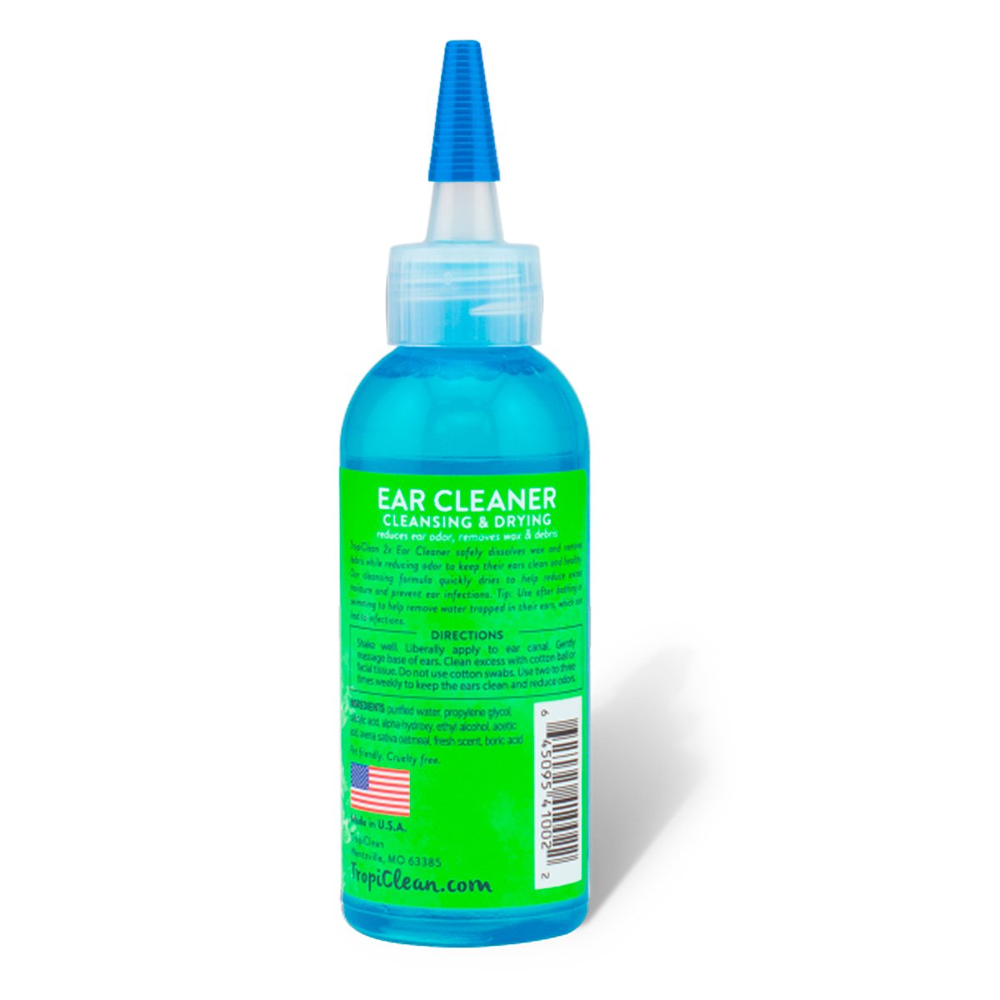
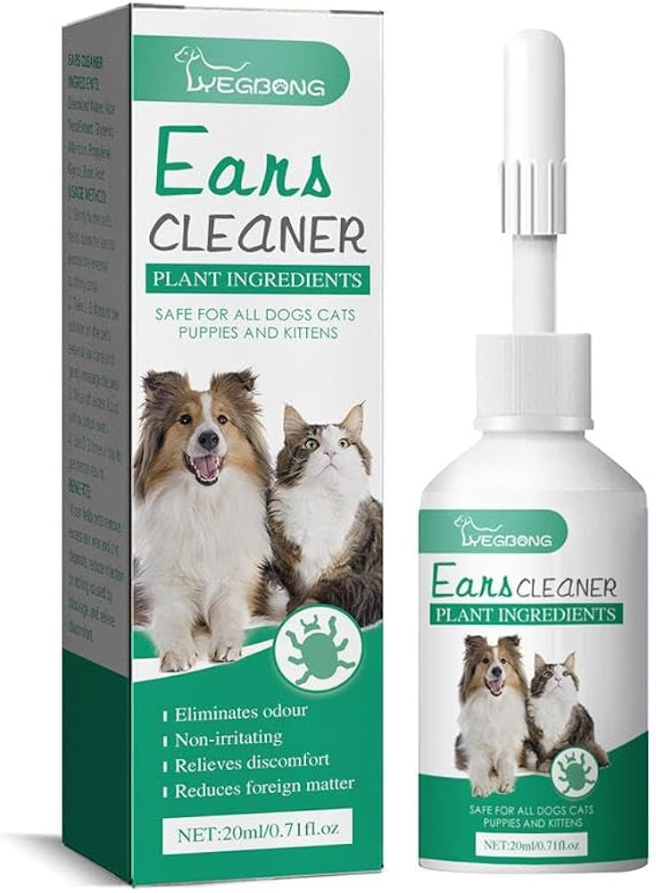
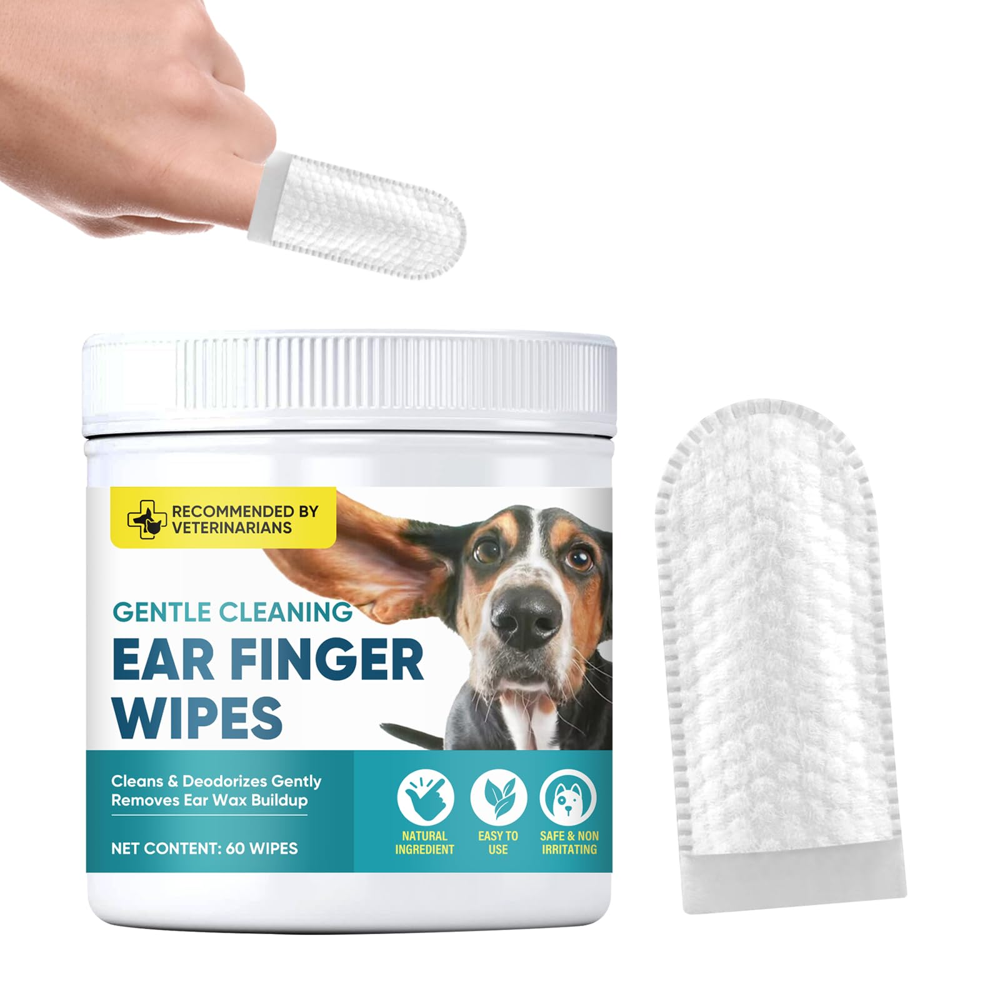
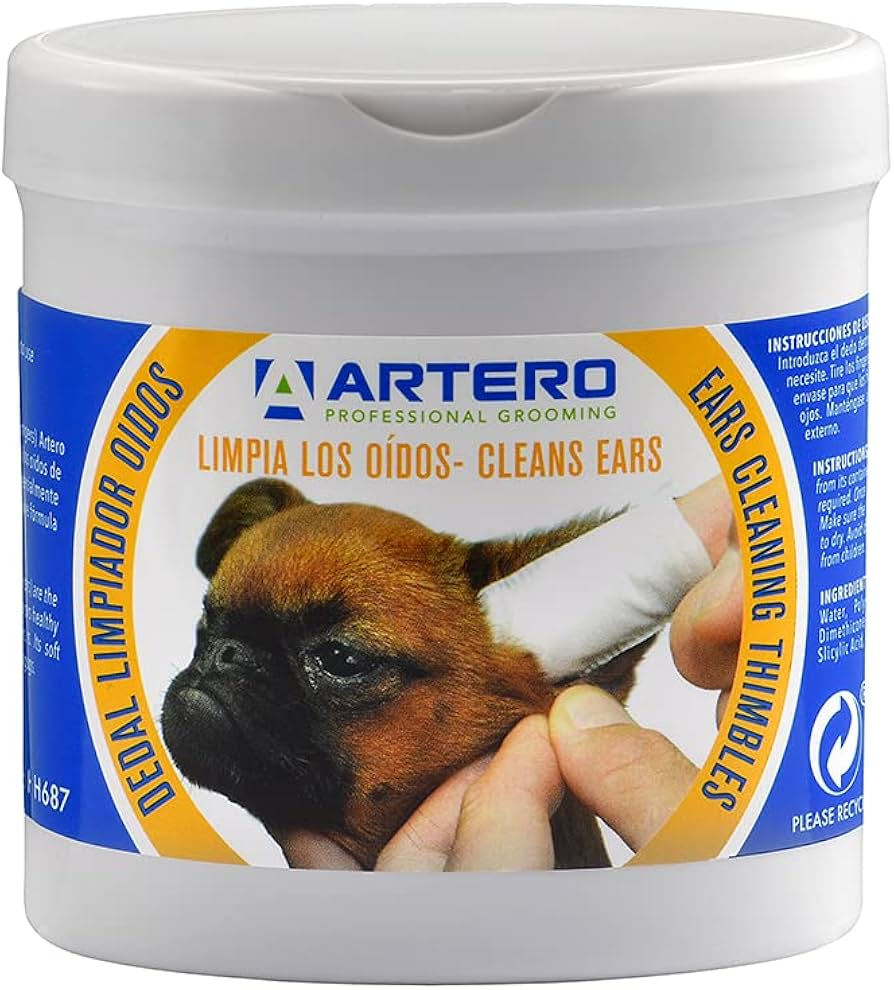

son soluciones líquidas o polvos especializados que se usan para limpiar, desodorizar y prevenir infecciones en el canal auditivo de los perros, eliminando el exceso de cerumen, humedad, suciedad, ácaros y bacterias, y aliviando el picor, siendo fundamentales para la higiene y salud auditiva, especialmente en razas con orejas caídas.
| Puede ser en liquido como generalme se usa | Puede ser en toallas como algunas mascotas lo requieran |
|---|---|
  |
  |